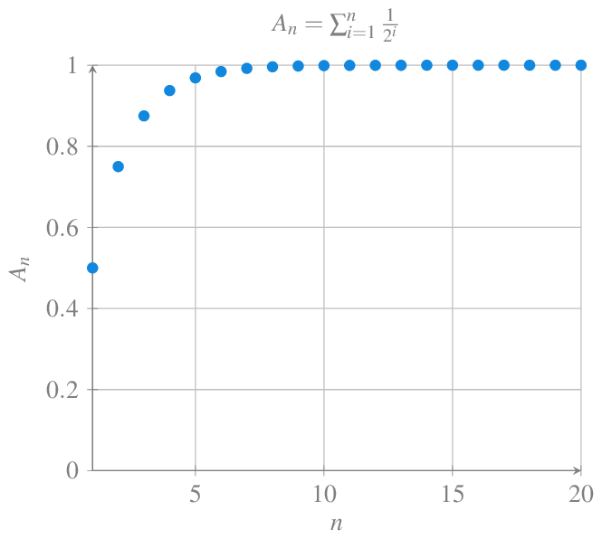
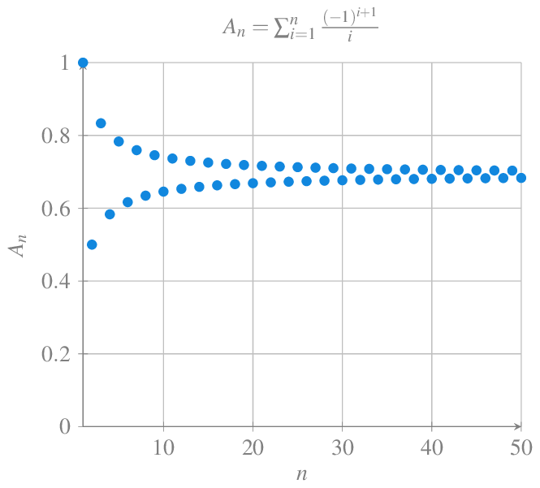

Series de número reales
Análisis Matemático
Para que un corredor pueda recorrer una distancia hasta la meta, primero tiene que recorrer la mitad de la distancia, después la mitad de la distancia restante, después la mitad de la distancia restante, y así hasta el infinito
¿Llegará en algún momento a la meta?
La distancia recorrida por el corredor puede expresarse como una suma infinita
\[ \frac{1}{2}+\frac{1}{4}+\frac{1}{8}+\frac{1}{16}+\frac{1}{32}+\cdots \]
que puede representarse, de manera más concisa, mediante el sumatorio
\[ \sum_{n=1}^\infty \frac{1}{2^n}. \]
Por supuesto, por experiencia, sabemos que el corredor acaba llegando a la meta, por lo que la suma de estas distancias debe ser la distancia total, es decir,
\[ \sum_{n=1}^\infty \frac{1}{2^n} = 1. \]
En este capítulo estudiaremos estas sumas infinitas y veremos técnicas para calcularlas cuando existan.
Concepto de serie
Definición 1 (Serie) Dada una sucesión de números reales \((a_n)_{n=1}^\infty\), se llama serie de término general \(a_n\) a la sucesión \((A_n)_{n=1}^\infty\), cuyos términos se obtienen sumando consecutivamente los \(n\) primeros términos de \((a_n)_{n=1}^\infty\), es decir,
\[ (A_n)_{n=1}^\infty= \left(\sum_{i=1}^na_i\right)_{n=1}^\infty. \]
El número \(A_n=\sum_{i=1}^n a_i\) se llama suma parcial de orden \(n\) de la serie, y habitualmente utilizaremos la notación \(\sum a_n\) para referirnos a la serie de término general \(n\).
Debe quedar claro que una serie no es una suma, sino una sucesión cuyos términos se forman mediante sumas de los términos de otra sucesión. Por tanto, todos lo visto en el capítulo de sucesiones es válido también para series.
Ejemplo 1 A partir de la sucesión \(\left(\frac{1}{n}\right)_{n=1}^\infty\), se puede construir la serie \(\sum \frac{1}{n}=(A_n)_{n=1}^\infty\) tal que
\[\begin{align*} A_1 &= 1\\ A_2 &= 1+\frac{1}{2}\\ A_3 &= 1+\frac{1}{2}+\frac{1}{3}\\ \vdots\\ A_n &= 1+\frac{1}{2}+\frac{1}{3}+\cdots \frac{1}{n} = \sum_{i=1}^n\frac{1}{i} \end{align*}\]
Esta serie se conoce como serie armónica.

En ocasiones es posible expresar el valor de la suma parcial de orden \(n\) mediante una fórmula explícita que depende de \(n\) y que se conoce como forma cerrada de la serie.
Ejemplo 2 Dada la serie \(\sum n\), su suma parcial de orden \(n\) \(A_n=\sum_{i=1}^n n\) puede expresarse mediante la forma cerrada \(A_n = \frac{1}{2}n(n+1)\).
Convergencia de series
Definición 2 (Serie convergente) Se dice que una serie \(\sum a_n\) es convergente, o que la sucesión \((a_n)_{n=1}^\infty\) es sumable, si la sucesión de las sumas parciales \(\left(\sum_{i=1}^n a_i\right)_{n=1}^\infty\) es convergente, y en tal caso, utilizaremos la notación \(\sum_{n=1}^\infty a_n\) para referirnos a su límite.
\[ \sum_{n=1}^{\infty} a_n=\lim A_n = \lim_{n\to\infty} \sum_{i=1}^n a_i. \]
Si una serie no es convergente, se dice que es divergente.
A veces interesa considerar series que empiezan en un índice distinto de 1. En tal caso, se usará la notación \(\sum_{n\geq k}a_n\) para referirse a la serie, y \(\sum_{n=k}^\infty a_n\) para referirse a su límite.
Ejemplo 3 Veamos que la serie \(\sum \left(\frac{1}{2}\right)^n\) de la paradoja de la dicotomía de Zenon converge.
\[ \sum_{i=1}^n \left(\frac{1}{2}\right)^i = 1 + \frac{1}{2} + \cdots +\frac{1}{2^n} = \frac{1-\frac{1}{2^{n+1}}}{1-\frac{1}{2}} = 2-\frac{1}{2^n}. \]
Y, por tanto,
\[ \sum_{n=1}^\infty \left(\frac{1}{2}\right)^n = \lim_{n\to\infty} \sum_{i=1}^n \left(\frac{1}{2}\right)^i = \lim_{n\to\infty} 2-\frac{1}{2^n} = 2. \]


Ejemplo 4 La serie \(\sum (-1)^n\) diverge. Para probarlo, basta con ver que las sumas parciales de orden \(n\) forman una sucesión alternada.
\[\begin{align*} A_1 &= -1\\ A_2 &= -1+ (-1)^2 = 0 \\ A_3 &= -1+ (-1)^2 + (-1)^3 = -1\\ A_4 &= -1+ (-1)^2 + (-1)^3 + (-1)^4= 0\\ \vdots \end{align*}\]
y por tanto, \((A_n)_{n=1}^\infty\) diverge.

Ejemplo 5 La serie armónica \(\sum \frac{1}{n}\) diverge. Una prueba bastante intuitiva se debe a Nicole Oresme y se basa en agrupar los términos de la serie en potencias de 2 de la siguiente manera
\[ \sum_{n=1}^\infty \frac{1}{n} = 1 + \frac{1}{2} + \left[\frac{1}{3}+\frac{1}{4}\right] + \left[\frac{1}{5}+\frac{1}{6}+\frac{1}{7}+\frac{1}{8}\right] + \cdots \]
Es fácil ver que los términos de esta serie son mayores que los de esta otra
\[ \begin{gathered} 1 + \frac{1}{2} + \left[\frac{1}{4}+\frac{1}{4}\right] + \left[\frac{1}{8}+\frac{1}{8}+\frac{1}{8}+\frac{1}{8}\right] + \cdots \\ = 1 +\frac{1}{2} + \frac{1}{2} + \frac{1}{2} + \cdots \end{gathered} \] que claramente diverge, por lo que la serie armónica también diverge.
Sin embargo, la serie armónica alternada \(\sum \frac{(-1)^{n+1}}{n}\) converge. La prueba es una consecuencia de la serie de Taylor para el logaritmo.

Proposición 1 Dadas dos sucesiones \((a_n)_{n=1}^\infty\) y \((b_n)_{n=1}^\infty\) tales que \(a_n=b_n\) \(\forall n>k\in\mathbb{N}\). Entonces, \(\sum a_n\) converge si y solo si \(\sum b_n\) converge, y en caso de converger se cumple que \[ \sum_{n=1}^\infty a_n-\sum_{i=1}^{k}a_i=\sum_{n=1}^\infty b_n-\sum_{i=1}^{k}b_i. \]
Proposición 2 Dadas dos series convergentes \(\sum a_n\) y \(\sum b_n\), entonces se cumple
- La serie \(\sum (a_n+b_n)\) es convergente y \(\sum_{n=1}^\infty (a_n+b_n) = \sum_{n=1}^\infty a_n +\sum_{n=1}^\infty b_n\).
- La serie \(\sum (c\cdot a_n)\) es convergente y \(\sum_{n=1}^\infty (c\cdot a_n) = c\sum_{n=1}^\infty a_n\).
Teorema 1 (Criterio de Cauchy) La serie \(\sum a_n\) converge si y solo si para cada \(\varepsilon>0\) existe \(k\in\mathbb{N}\) tal que
\[ |a_{n+1}+a_{n+2}+\cdots+a_m|<\varepsilon\ \forall m>n\geq k. \]
El siguiente teorema establece una condición necesaria para la convergencia de una serie.
Teorema 2 (Criterio de divergencia) Dada una serie \(\sum a_n\), si \(\lim_{n\to\infty} a_n \neq 0\), entonces la serie diverge.
El teorema anterior permite establecer la divergencia de una serie cuando \(\lim_{n\to\infty} a_n \neq 0\), pero no dice nada cuando \(\lim_{n\to\infty} a_0 = 0\). De hecho, en este último caso, puede ocurrir que la serie converja, como ocurre con la serie \(\sum \frac{1}{2^n}\) o que diverja como ocurre con la serie armónica \(\sum \frac{1}{n}\).
Ejemplo 6 Ya hemos visto antes que la serie \(\sum (-1)^n\) no converge, porque la sucesión \(((-1)^n)_{n=1}^\infty\) no converge.
La serie \(\sum \frac{2n^2}{3n^2+n}\) tampoco converge, pues \(\lim_{n\to\infty}\frac{2n^2}{3n^2+n}=\frac{2}{3}\neq 0\).
Corolario 1 Dada una serie \(\sum a_n\) convergente, si \(a_n\neq 0\) \(\forall n\in\mathbb{N}\), entonces la serie de los términos inversos \(\sum a_n^{-1}\) diverge.
Series geométricas
En muchas casos de la vida real, aparecen sucesiones cuyo término \(n\) se obtiene multiplicando el término anterior por un mismo valor.
Definición 3 (Series geométricas) Dados dos números \(a, r\in\mathbb{R}\), la sucesión \((a+ar+ar^{2}+\cdots+ar^{n})_{n=1}^\infty\) se llama serie geométrica de razón \(r\) y se representa \(\sum ar^n\).
Ejemplo 7 La serie \(\sum \frac{1}{2^n}\) de la paradoja de la dicotomía de Zenon es una serie geométrica de razón \(1/2\).
Proposición 3 La suma parcial de orden \(n\) de una serie geométrica \(\sum ar^n\) es
\[ A_n = \sum_{i=0}^n = a\frac{1-r^{n+1}}{1-r} \]
Ejemplo 8 La suma parcial de orden \(10\) de la serie \(\sum \frac{1}{2^n}\) es \(A_n = \sum_{i=0}^n \frac{1}{2^n} = \frac{1-\frac{1}{2^{11}}}{1-\frac{1}{2}} \approx 1.9990234375\).
Corolario 2 Una serie geométrica \(\sum ar^n\) de razón \(r\) converge si y solo si \(|r|<1\).
Ejemplo 9 La serie geométrica \(\sum \frac{1}{2^n}\) converge ya que su razón es \(\frac{1}{2}<1\). Sin embargo, la serie geométrica \(\sum \left(\frac{3}{2}\right)^n\) no converge, ya que \(\frac{3}{2}\geq 1\).
Series \(p\)
Otro tipo de series que aparece con bastante frecuencia en contextos reales son las llamadas series \(p\), de las que la serie armónica es un caso particular.
Definición 4 (Series \(p\)) Dado un número \(p\in\mathbb{R}\), la serie \(\sum \frac{1}{n^p}\) se conoce como serie \(p\).
Ejemplo 10 La serie armónica \(\frac{1}{n}\) es una serie \(p\) con \(p=1\), y la serie de los inversos de los cuadrados \(\frac{1}{n^2}\) es otra serie \(p\) con \(p=2\).
Proposición 4 Una serie \(p\) \(\sum \frac{1}{n^p}\) converge si y solo si \(p>1\).
Ejemplo 11 Ya se ha visto que la serie armónica \(\sum \frac{1}{n}\) diverge, ya que \(p=1\), mientras que la serie \(\sum \frac{1}{n^2}\) converge al ser \(p=2>1\). De hecho, la suma exacta de esta última serie es el famoso problema de Basilea que consiguió resolver Euler, demostrando que que \(\sum_{n=1}^\infty \frac{1}{n^2} = \frac{\pi^2}{6}\).

Series telescópicas
Otro tipo de serie, menos frecuente, pero también interesante, son las series cuyos términos se van cancelando sucesivamente, de manera que la serie colapsa.
Definición 5 Dada una sucesión \((a_n)_{n=1}^\infty\), las series de la forma \(\sum (a_n-a_{n+1})\) se llaman series telescópicas.
Ejemplo 12 La serie \(\sum \frac{1}{n^2+n}\) es una serie telescópica, ya que
\[ \sum \frac{1}{n^2+n} = \sum \frac{1}{n}-\frac{1}{n+1}. \]
Proposición 5 Una serie telescópica \(\sum (a_n-a_{n+1})\) converge si y solo si la sucesión \((a_n)_{n=1}^\infty\) converge.
Ejemplo 13 La serie telescópica \(\sum \frac{1}{n}-\frac{1}{n+1}\) converge ya que \(\lim_{n\to\infty}\frac{1}{n} = 0\), y por tanto, \(\sum_{n=1}^\infty \frac{1}{n}-\frac{1}{n+1} = 1\).
Convergencia de series de términos positivos
En esta sección se presentan algunos criterios para estudiar la convergencia de series \(\sum a_n\) tales que todos sus términos son positivos, es decir, \(a_n\geq 0\) \(\forall n\in\mathbb{N}\). Este tipo de series aparecen de manera frecuente en muchos problemas donde siempre se suman cantidades positivas.
Teorema 3 (Criterio de acotación) Una serie \(\sum a_n\) de términos positivos converge si y solo si la sucesión de sus sumas parciales está acotada.
Teorema 4 (Criterio de comparación de series) Dadas dos series de términos positivos \(\sum a_n\) y \(\sum b_n\) tales que \(a_n<b_n\) \(\forall n\in\mathbb{N}\), entonces:
- Si \(\sum b_n\) converge, \(\sum a_n\) converge.
- Si \(\sum a_n\) diverge, \(\sum b_n\) diverge.
Ejemplo 14 Veamos que la serie \(\sum \frac{2+\operatorname{sen}(n+1)}{2^n+n^2}\) converge.
Para ello basta ver que se trata de una serie de términos positivos, y que
\[ \frac{2+\operatorname{sen}(n+1)}{2^n+n^2} \leq \frac{3}{2^n+n^2} \leq \frac{3}{2^n} \]
Como se ha visto antes, la serie \(\sum \frac{1}{2^n}\) converge, de manera que \(\sum \frac{3}{2^n}\) también converge, y por el teorema anterior, \(\sum \frac{2+\operatorname{sen}(n+1)}{2^n+n^2}\) también converge.
Una forma bastante intuitiva de estudiar la convergencia de una serie es mediante la integral impropia del término general de la serie.
Teorema 5 (Criterio de la integral) Dada una serie \(\sum a_n\) de términos positivos, si \(a_n=f(n)\) para una función \(f\) continua, positiva y decreciente en el intervalo \([1,\infty)\), entonces la serie converge si y solo si la integral impropia \(\int_1^\infty f(x)\,dx\) converge.
Ejemplo 15 Veamos cómo podemos probar que la serie \(p\) \(\sum_{n=1}^\infty \frac{1}{n^p}\) converge para \(p>1\) usando el criterio de la integral.
Para ello, consideramos la función \(f(x)=\frac{1}{x^p}\), que es continua, positiva y decreciente en el intervalo \([1,\infty)\). Entonces, la integral impropia de \(f\) es
\[ \int_1^\infty \frac{1}{x^p}dx = \lim_{n\to\infty} \int_1^n \frac{1}{x^p}dx = \lim_{n\to\infty} \left[\frac{x^{1-p}}{1-p}\right]_1^n = \lim_{n\to\infty} \left[\frac{n^{1-p}}{1-p}-\frac{1}{1-p}\right] = \frac{1}{p-1}, \]
y de acuerdo al criterio de la integral, la serie \(\sum_{n=1}^\infty \frac{1}{n^p}\) converge.
Sin embargo, para \(p<1\) se tiene que la integral impropia es
\[ \int_1^\infty \frac{1}{x^p}dx = \lim_{n\to\infty} \left[\frac{n^{1-p}}{1-p}-\frac{1}{1-p}\right] = \infty, \]
por lo que, de acuerdo al criterio de la integral, la serie \(\sum_{n=1}^\infty \frac{1}{n^p}\) diverge.
Finalmente, para \(p=1\), tenemos la serie armónica, y la integral impropia es
\[ \int_1^\infty \frac{1}{x}dx = \lim_{n\to\infty} \left[\log(x)\right]_1^n = \lim_{n\to\infty} \log(n) = \infty, \]
por lo que, de acuerdo al criterio de la integral, la serie armónica \(\sum_{n=1}^\infty \frac{1}{n}\) diverge, algo que ya habíamos probado.
El criterio de la integral permite averiguar si una serie de términos positivos converge o no, pero, cuando la serie converge, no tiene porqué cumplirse que la suma sea el valor de la integral indefinida.
Por ejemplo, \(\sum_{n=1}^\infty \frac{1}{n^2} = \frac{\pi}{6}\), pero \(\int_1^\infty \frac{1}{x^2}\,dx = 1\).
Aunque la integral impropia no siempre coincide con la suma de la serie, podemos usarla para calcular la suma de la serie de manera aproximada.
Si tomamos la suma parcial \(A_n = \sum_{i=1}^n a_i\) como una aproximación de la suma \(\sum_{n=1}^\infty a_n\), entonces el error de la aproximación viene dado por
\[ R_n = \sum_{n=1}^\infty a_n - A_n= a_{n+1}+a_{n+2}+\cdots, \]
que se conoce también como residuo de la serie.
Proposición 6 Dada una serie \(\sum a_n\) de términos positivos, si \(a_n=f(n)\) para una función \(f\) continua, positiva y decreciente en el intervalo \([n,\infty)\), y \(\sum a_n\) converge, entonces
\[ \int_{n+1}^\infty f(x)\,dx \leq R_n \leq \int_n^\infty f(x)\,dx. \]
Ejemplo 16 Vamos a dar una aproximación para la serie \(\sum \frac{1}{n^2}\) usando la suma parcial de orden 5, que vale
\[ A_5 = \sum_{i=1}^5 \frac{1}{n^2} = 1+\frac{1}{4}+\frac{1}{9}+\frac{1}{16}+\frac{1}{25} = 1.4636111111. \]
Usando la proposición anterior se puede obtener una cota para el residuo de la serie, que es
\[ \begin{gathered} \int_6^\infty \frac{1}{x^2}\,dx \leq R_5 \leq \int_5^\infty \frac{1}{x^2}\,dx, \Leftrightarrow \\ \left[-\frac{1}{x}\right]_6^\infty \leq R_5 \leq \left[-\frac{1}{x}\right]_5^\infty, \Leftrightarrow \\ \frac{1}{6} \leq R_5 \leq \frac{1}{5}. \end{gathered} \]
Por tanto, la suma de la serie \(\sum \frac{1}{n^2}\) está acotada por
\[ 1.4636111111 + \frac{1}{6} \leq \sum_{n=1}^\infty \frac{1}{n^2} \leq 1.4636111111 + \frac{1}{5}. \]
Teorema 6 (Criterio del cociente) Dadas dos series de términos positivos \(\sum a_n\) y \(\sum b_n\), si existe el límite
\[ \lim_{n\to\infty} \frac{a_n}{b_n} = l \]
con \(l>0\), entonces \(\sum a_n\) converge si y solo si \(\sum b_n\) converge.
Ejemplo 17 Veamos que la serie \(\sum \frac{1}{2^n-n}\) converge. Ya hemos visto que la serie \(\sum \frac{1}{2^n}\) converge, pero no podemos usar directamente el criterio de comparación de series porque \(\frac{1}{2^n-n}>\frac{1}{2^n}\) \(\forall n\in\mathbb{N}\). Sin embargo, usando el criterio del cociente se tiene
\[ \lim_{n\to\infty} \frac{\frac{1}{2^n-n}}{\frac{1}{2^n}} = \lim_{n\to\infty} \frac{2^n}{2^n-n} = \lim_{n\to\infty}\frac{1}{1-\frac{n}{2^n}} = 1>0, \]
por lo que, como \(\sum \frac{1}{2^n}\) converge, \(\sum \frac{1}{2^n-n}\) también.
Para poder aplicar el criterio del cociente, es necesario que \(\lim_{n\to\infty} \frac{a_n}{b_n}\) exista y sea estrictamente positivo, ya que si \(\lim_{n\to\infty} \frac{a_n}{b_n}=0\), es posible que una sucesión converja y la otra no.
Ejemplo 18 Si tomamos la serie geométrica \(\sum \frac{1}{2^n}\) y la serie armónica \(\frac{1}{n}\), se cumple que
\[ \lim_{n\to\infty}\frac{\frac{1}{2^n}}{\frac{1}{n}} = \lim_{n\to\infty}\frac{n}{2^n} = 0. \]
Sin embargo, ya hemos visto que una converge y la otra no.
Convergencia de series alternadas
Los resultados de la sección anterior solo se aplican a series de términos positivos, pero en ocasiones, la sucesión a partir de la que se construye la serie es de términos alternados, es decir, el signo de los sucesivos términos va cambiando. Un ejemplo es la serie armónica alternada que ya se ha tratado. A continuación se presentan algunos resultados para estudiar este tipo de series.
Teorema 7 (Criterio de la serie alternada (Leibniz)) Dada una serie alternada \(\sum (-1)^{n-1} a_n\), con \(a_n>0\), si \((a_n)_{n=1}^\infty\) es monótona decreciente y \(\lim_{n\to\infty} a_n = 0\), entonces la serie converge.
Ejemplo 19 La serie armónica alternada \(\sum \frac{(-1)^{n-1}}{n}\) cumple las condiciones del teorema anterior, ya que, \(\frac{1}{n+1}\leq \frac{1}{n}\) \(\forall n\in\mathbb{N}\), y además \(\lim_{n\to\infty} \frac{1}{n}=0\), por lo que converge.
Veamos ahora que la serie \(\sum (-1)^{n-1}\frac{n}{n^2+1}\) también cumple las condiciones del teorema. La primera condición se cumple ya que,
\[ \begin{gathered} \frac{n+1}{(n+1)^2+1}\leq\frac{n}{n^2+1} \Leftrightarrow \frac{(n+1)^2+1}{n+1}\geq\frac{n^2+1}{n}\\ \Leftrightarrow (n+1)+\frac{1}{n+1} \geq n+\frac{1}{n}, \end{gathered} \]
lo cual es cierto \(\forall n\in\mathbb{N}\), por que, en particular, \(n+1\geq n+\frac{1}{n}\).
Por otro lado,
\[ \lim_{n\to\infty}\frac{n}{n^2+1}= \lim_{n\to\infty}\frac{1}{n+\frac{1}{n}} = 0, \] de manera que la segunda condición también se cumple, y por tanto, las serie converge.
Convergencia absoluta
En general, si los términos de una serie decrecen lo suficiente mente rápido sin tener en cuenta su signo, es decir, en valor absoluto, se puede asegurar que la serie converge, independientemente de qué términos de la serie son positivos o negativos.
Definición 6 (Serie absolutamente convergente) Una serie \(\sum a_n\) es absolutamente convergente si la serie de los valores absolutos de sus términos \(\sum |a_n|\) converge.
Si la serie es de términos positivos, entonces \(|a_n|=a_n\) \(\forall n\in\mathbb{N}\) y, por tanto, la convergencia y la convergencia absoluta son equivalentes. Pero si la serie es alternante o tiene tanto términos positivos como negativos, puede ocurrir que la serie sea convergente pero no absolutamente convergente.
Ejemplo 20 La serie \(\sum \frac{(-1)^n}{n^2}\) es absolutamente convergente ya que \(\sum \left|\frac{(-1)^n}{n^2}\right|=\sum \frac{1}{n^2}\), que es convergente al ser una serie \(p\) con \(p=2\).
Que una serie sea absolutamente convergente quiere decir que sus términos se hacen pequeños (en valor absoluto) lo suficientemente rápido para garantizar que la suma converge sin tener en cuenta su signo.
Definición 7 (Serie condicionalmente convergente) Una serie \(\sum a_n\) es condicionalmente convergente si es convergente pero no absolutamente convergente.
Ejemplo 21 Ya hemos visto que la serie armónica alternada \(\sum \frac{(-1)^n}{n}\) es convergente, pero no es absolutamente convergente, ya que \(\sum \left|\frac{(-1)^n}{n}\right|=\sum \frac{1}{n}\), que se trata de la serie armónica, y por tanto, no converge. Por tanto la serie armónica alternada es condicionalmente convergente.
Teorema 8 Si una serie es absolutamente convergente, entonces es convergente.
Teorema 9 (Criterio de la razón (D’Alembert)) Dada una serie \(\sum a_n\), se cumple:
- Si \(\lim_{n\to\infty}\left|\frac{a_{n+1}}{a_n}\right|=l<1\), entonces la serie es absolutamente convergente.
- Si \(\lim_{n\to\infty}\left|\frac{a_{n+1}}{a_n}\right|=l>1\) o \(\lim_{n\to\infty}\left|\frac{a_{n+1}}{a_n}\right|=\infty\), entonces la serie es divergente.
Ejemplo 22 Veamos que la serie \(\sum (-1)^n \frac{n^2}{2^n}\) es absolutamente convergente aplicando el criterio de la razón.
\[\begin{align*} \lim_{n\to\infty} \left|\frac{a_{n+1}}{a_n}\right| &= \lim_{n\to\infty} \left|\frac{\frac{(-1)^{n+1}(n+1)^2}{2^{n+1}}}{\frac{(-1)^n n^2}{2^n}}\right| = \lim_{n\to\infty} \frac{(n+1)^2}{2^{n+1}}\frac{2^n}{n^2}\\ &= \lim_{n\to\infty}\frac{1}{2}\left(\frac{n+1}{n}\right)^2 = \frac{1}{2}\lim_{n\to\infty}\left(1+\frac{1}{n}\right)^2 = \frac{1}{2}<1, \end{align*}\] y por tanto, la serie es absolutamente convergente.
\(\lim_{n\to\infty}\left|\frac{a_{n+1}}{a_n}\right|=1\), el criterio de la razón no garantiza nada, es decir, la serie podría ser convergente o divergente.
Teorema 10 (Criterio de la raíz (Cauchy)) Dada una serie \(\sum a_n\), se cumple:
- Si \(\lim_{n\to\infty}\sqrt[n]{|a_n|}=l<1\), entonces la serie es absolutamente convergente.
- Si \(\lim_{n\to\infty}\sqrt[n]{|a_n|}=l>1\), o \(\lim_{n\to\infty}\sqrt[n]{|a_n|}=\infty\), entonces la serie es divergente.
Ejemplo 23 Veamos que la serie \(\sum \left(\frac{3n}{2n+1}\right)^n\) diverge aplicando el criterio de la raíz. Para ello basta ver que
\[ \lim_{n\to\infty} \sqrt[n]{\left(\frac{3n}{2n+1}\right)^n} = \lim_{n\to\infty} \frac{3n}{2n+1} = \lim_{n\to\infty} \frac{3}{2+\frac{1}{n}} = \frac{3}{2} >1. \]
Series de potencias
Del mismo modo que hemos estudiado las series que se obtienen a partir de una sucesión numérica, en Análisis resulta también interesante estudiar las series que se obtienen a partir de una sucesión de funciones.
Definición 8 (Serie funcional) Dada una sucesión de funciones \((f_n)_{n=1}^\infty\), se llama serie de funciones o serie funcional de término general \(f_n\) a la sucesión \((F_n)_{n=1}^\infty\), cuyos términos se obtienen sumando consecutivamente las \(n\) primeras funciones de \((f_n)_{n=1}^\infty\), es decir,
\[ (F_n)_{n=1}^\infty= \left(\sum_{i=1}^nf_i\right)_{n=1}^\infty. \]
El número \(F_n=\sum_{i=1}^n f_i\) se llama suma funcional parcial de orden \(n\) de la serie funcional, y habitualmente utilizaremos la notación \(\sum f_n\) para referirnos a la serie funcional de término general \(f_n\).
Las primeras sumas funcionales parciales de la serie funcional \(\sum \frac{x}{n^2}\) son
\[\begin{align*} F_1 &= x\\ F_2 &= x+\frac{x}{4}\\ F_3 &= x+\frac{x}{4}+\frac{x}{9}\\ \vdots\\ F_n &= \sum_{i=1}^n \frac{x}{i^2} \end{align*}\]

Una serie funcional puede ser convergente para algunos valores de \(x\) y divergente para otros.
Ejemplo 24 La serie funcional \(\sum x^n\) es una serie geométrica de razón \(x\), de modo que, será convergente cuando \(|x|<1\) y divergente en caso contrario.
Definición 9 (Dominio de convergencia puntual de una serie funcional) Dada una serie funcional \(\sum f_n\), se llama dominio de convergencia puntual de las serie al conjunto \(\mathcal{C}=\{x\in\mathbb{R}: \sum f_n(x) \mbox{ converge}\}\)
Definición 10 (Función suma de una serie funcional) Dada una serie funcional \(\sum f_n\) con dominio de convergencia puntual \(\mathcal{C}\), se llama función suma de la serie, a la función \(F:\mathcal{C}\to\mathbb{R}\) definida por \[ F(x) = \sum_{n=1}^\infty f_n(x),\ \forall x\in \mathcal{C}. \]
Ejemplo 25 El dominio de convergencia puntual de la serie funcional \(\sum \frac{x}{n^2}\) es \(\mathbb{R}\), ya que \(\forall x\in\mathbb{R}\), \(\sum \frac{x}{n^2}=x\sum\frac{1}{n^2}\), que converge al ser \(\sum \frac{1}{n^2}\) convergente. Además, como vimos que \(\sum_{n=1}^\infty \frac{1}{n^2}=\frac{\pi^2}{6}\), se tiene que su su función suma es \(\sum_{n=1}^\infty \frac{x}{n^2} = x\sum_{n=1}^\infty \frac{1}{n^2}= \frac{\pi^2}{6}x\).
De particular interés son las series que se obtienen a partir de sucesiones de la forma \((c_nx^n)_{n=1}^\infty\) que dan lugar a polinomios. Como ya vimos con los polinomios de Taylor, estas series nos permitirán estudiar funciones complicadas mediante simples polinomios.
Definición 11 (Serie de potencias) Dado un número real \(a\in\mathbb{R}\) y una sucesión de números reales \((c_n)_{n=0}^\infty\), se llama serie de potencias centrada en \(a\) a la serie \(\sum c_n(x-a)^n\).
La sucesión \((c_n)_{n=0}^\infty\) se llama sucesión de coeficientes de la serie, y al término \(c_0\) se le llama término independiente.
Ejemplo 26 Tomando \(a=0\) y la sucesión de coeficientes \(\left(\frac{1}{n}\right)_{n=1}^\infty\), se tiene la serie de potencias \(\sum \frac{x^n}{n}\), cuyas primeras sumas funcionales parciales son
\[\begin{align*} F_1 &= x\\ F_2 &= x+\frac{x^2}{2}\\ F_3 &= x+\frac{x^2}{2}+\frac{x^3}{3}\\ \vdots\\ F_n &= \sum_{i=1}^n \frac{x^i}{i} \end{align*}\]
Para cualquier serie de potencias \(\sum c_n(x-a)^n\), está claro que \(a\) pertenece al dominio de convergencia puntual de la serie, pues para \(x=a\) se tiene \(\sum_{n=1}^\infty c_n(a-a)^n = c_0\). Veremos a continuación un par resultados que nos ayudarán a ver para qué otros valores de \(x\) la serie de potencias converge.
Proposición 7 Dada una serie de potencias \(\sum c_nx^n\) centrada en el \(0\),
- Si la serie converge para \(x=b\neq 0\), entonces converge para cualquier \(x\) tal que \(|x|<|b|\).
- Si la serie diverge para \(x=d\neq 0\), entonces diverge para cualquier \(x\) con \(|x|>|d|\).
Ejemplo 27 Ya se vio que la serie armónica \(\sum \frac{1}{n}\) es divergente, y por tanto, la serie de potencias \(\sum \frac{x^n}{n}\) es divergente para \(x=1\), lo que significa, según la proposición anterior, que también diverge para \(|x|>1\). Por otro lado, para \(x=1/2\), se tiene la serie
\[ \sum \frac{\left(\frac{1}{2}\right)^n}{n} = \sum \frac{1}{n2^n}, \]
que, por el criterio de comparación de series, converge al ser \(\frac{1}{n2^n}\leq\frac{1}{2^n}\) \(\forall n\in\mathbb{N}\) y ser \(\sum \frac{1}{2^n}\) convergente. Eso significa que la serie de potencias también converge para \(|x|\leq \frac{1}{2}\).
Más adelante se mostrará que el dominio de convergencia puntual de esta serie de potencias es el intervalo \([-1,1)\).
Corolario 3 Dada una serie de potencias \(\sum c_n(x-a)^n\) centrada en el \(a\),
- Si la serie converge para \(x=b\neq a\), entonces converge para cualquier \(x\) tal que \(|x-a|<|b-a|\).
- Si la serie diverge para \(x=d\neq a\), entonces diverge para cualquier \(x\) con \(|x-a|>|d-a|\).
El siguiente teorema resulta de gran utilidad a la hora de determinar el dominio de convergencia puntual de una serie de potencias.
Teorema 11 (Radio de convergencia) Dada una serie de potencias \(\sum c_n(x-a)^n\), se cumple que, o bien el dominio de convergencia puntual es \(\mathbb{R}\), o bien existe un número \(R\geq 0\), llamado radio de convergencia tal que la serie converge si \(|x-a|<R\) y diverge si \(|x-a|>R\).
El teorema anterior no afirma nada sobre los puntos \(|x-a|=R\). De hecho, en estos los puntos la serie puede converger o divergir. Y tampoco proporciona un procedimiento para calcular el radio de convergencia de una serie de potencias. Afortunadamente, los siguientes teoremas permitirán su cálculo la mayoría de las veces.
Teorema 12 Dada una serie de potencias \(\sum c_n(x-a)^n\), si la sucesión \((\sqrt[n]{|c_n|})_{n=1}^\infty\) converge, entonces el radio de convergencia de la serie de potencias es
\[ R=\frac{1}{\lim_{n\to\infty} \sqrt[n]{|c_n|}}. \]
Ejemplo 28 Veamos cuál es el dominio de convergencia puntual de la serie de potencias \(\sum \frac{(x-2)^n}{n}\). Utilizando el teorema anterior, el radio de convergencia de la serie es
\[ R= \frac{1}{\lim_{n\to\infty} \sqrt[n]{|\frac{1}{n}|}} = \frac{1}{1} = 1 \]
Por tanto, la serie converge para todo \(|x-2|<1\), es decir, \(1<x<3\). En \(x=1\) y \(x=3\) el teorema del radio de convergencia no dice nada, pero podemos estudiar la convergencia de estos dos casos particulares. En \(x=1\) tenemos la serie \(\sum \frac{(-1)^n}{n}\) que es la serie armónica alternada, y por tanto, converge. Y en \(x=3\) tenemos la serie \(\sum \frac{1}{n}\) que es la serie armónica, y por tanto diverge.
Así pues, el dominio de convergencia puntal de la serie de potencias es el intervalo \([1,3)\).
Teorema 13 Dada una serie de potencias \(\sum c_n(x-a)^n\), si \(c_n\neq 0\) \(\forall n\in\mathbb{N}\) y la sucesión \(\left(\frac{c_n}{c_{n+1}}\right)_{n=1}^\infty\) converge, entonces el radio de convergencia de la serie de potencias es
\[ R = \lim_{n\to\infty} \left|\frac{c_n}{c_{n+1}}\right|. \]
Ejemplo 29 Veamos cuál es el dominio de convergencia puntual de la serie de potencias \(\sum \frac{x^n}{n}\). Utilizando el teorema anterior, el radio de convergencia de la serie es
\[ R = \lim_{n\to\infty} \frac{1/n}{1/n+1} = \lim_{n\to\infty} \frac{n+1}{n} = 1. \]
Por tanto, la serie converge para \(|x|<1\). En \(x=1\) la serie que resulta es la serie armónica, que es divergente, y en \(x=-1\) la serie que resulta es la serie armónica alternada que converge.
Así pues, el domino de convergencia puntual de la serie de potencias es el intervalo \([-1,1)\).
Las funciones que pueden representarse mediante una serie de potencias en un intervalo de su dominio tienen propiedades muy interesantes, como que son infinitamente derivables en ese intervalo.
Definición 12 (Función analítica) Dada una función \(f:\mathbb{R}\to\mathbb{R}\), se dice que \(f\) es analítica en un intervalo \(I\), si para cualquier \(a\in I\) \(f\) se puede expresar como una serie de potencias centrada en \(a\), es decir,
\[ f(x) = \sum_{n=1}^\infty c_n(x-a)^n\]
para cualquier \(x\) en un entorno de \(a\).
Ejemplo 30 Cualquier polinomio de grado \(n\) es una función analítica en todo \(\mathbb{R}\) ya que puede representarse trivialmente como una serie de potencias tomando coeficientes nulos para los términos de grado mayor que \(n\).
Otras funciones elementales como la función exponencial, la función logarítmica y las trigonométricas son también analíticas en cualquier intervalo abierto de su dominio.
Series de Taylor
Definición 13 (Serie de Taylor) Dada una función \(f(x)\) con derivadas de orden \(n\) en \(a\) \(\forall n\in\mathbb{N}\), se define la serie de Taylor de \(f\) centrada en \(a\), como
\[ \sum \frac{f^{(n)}(a)}{n!}(x-a)^n. \]
Ejemplo 31 Veamos cuál es la serie de Taylor de la función \(f(x)=\ln(x)\) en \(a=1\). Para ello calculamos las primeras derivadas de \(f\) en \(a=1\).
\[ \begin{array}{lll} f(x)=\ln x & \quad & f(1)=\ln 1 =0,\\ f'(x)=1/x & & f'(1)=1/1=1,\\ f''(x)=-1/x^2 & & f''(1)=-1/1^2=-1,\\ f'''(x)=2/x^3 & & f'''(1)=2/1^3=2,\\ f''''(x)=-3!/x^4 & & f''''(1) = -3!\\ \vdots & & \vdots\\ f^{(n)}(x) = (-1)^{n-1}(n-1)!/x^n & & f^{(n)}(x) = (-1)^{n-1}(n-1)! \end{array} \]
Sustituyendo en la fórmula de la serie de Taylor se tiene
\[ \sum \frac{f^{(n)}(1)}{n!}(x-1)^n = \sum \frac{(-1)^{n-1}(n-1)!}{n!} (x-1)^n = \sum \frac{(-1)^{n-1}}{n}(x-1)^n. \]
Su suma parcial de orden \(n\) es
\[\begin{align*} A_n(x) &= \sum_{i=1}^n \frac{(-1)^{i-1}}{i}(x-1)^i\\ &= (x-1)-\frac{1}{2}(x-1)^2 +\frac{1}{3}(x-1)^3+ \cdots +\frac{(-1)^{n-1}}{n}(x-1)^n, \end{align*}\]
que resulta ser el polinomio de Taylor de orden \(n\) de \(f\) en \(a=1\).
Un caso particular bastante habitual es la serie de Taylor en \(a=0\).
Definición 14 (Serie de Maclaurin) Dada una función \(f(x)\) con derivadas de orden \(n\) en \(0\) \(\forall n\in\mathbb{N}\), se define la serie de Maclaurin de \(f\), como
\[ \sum \frac{f^{(n)}(0)}{n!}x^n. \]
Ejemplo 32 Veamos cuál es la serie de Maclaurin de la función \(f(x)=\frac{1}{1-x}\). Para ello calculamos las primeras derivadas de \(f\) en \(0\).
\[ \begin{array}{lll} f(x)=\frac{1}{1-x} & \quad & f(0)= 1,\\ f'(x)=\frac{1}{(1-x)^2} & & f'(0)=1,\\ f''(x)=\frac{2}{(1-x)^3} & & f''(0)=2,\\ f'''(x)=\frac{3!}{(1-x)^4} & & f'''(0)=3!,\\ \vdots & & \vdots\\ f^{(n)}(x) = \frac{n!}{(1-x)^(n+1)} & & f^{(n)}(0) = n! \end{array} \]
Sustituyendo en la fórmula de la serie de Maclaurin se tiene
\[ \sum \frac{f^{(n)}(0)}{n!}x^n = \sum \frac{n!}{n!}x^n = \sum x^n \]
que es una serie geométrica de razón \(x\), y por tanto, converge para \(|x|<1\), con suma \(\sum_{n=1}^\infty x^n =\frac{1}{1-x}\), es decir, \(f(x)\) coincide con la suma de sus serie de Maclaurin para \(|x|<1\).
Teorema 14 Si \(f\) es una función analítica en un intervalo \(I\), entonces para cualquier \(a\in I\) se cumple que
\[ f(x)=\sum_{n=1}^\infty \frac{f^{n}(a)}{n!}(x-a)^n \]
\(\forall x\in\mathcal{C}\).
El teorema anterior garantiza que si una función es analítica en un intervalo \(I\), entonces puede representarse mediante la serie es la serie de Taylor en \(a\), \(\forall a\in I\), pero no todas las funciones son analíticas.
Ejemplo 33 La función
\[ f(x) = \begin{cases} e^{-1/x^2} & \mbox{si $x\neq 0$}\\ 0 & \mbox{$x=0$} \end{cases} \]
es infinitamente derivable en \(x=0\) y \(f^{(n)}(0)=0\) \(\forall n\in\mathbb{N}\), de manera que su serie de Maclaurin es \(\sum 0\), que obviamente, converge para cualquier número \(x\in\mathbb{R}\), pero su suma, que es nula, no coincide con \(f\) salvo en \(x=0\).
Cabe preguntarse, ¿cuándo \(f(x)=\sum_{n=1}^\infty \frac{f^{n}(a)}{n!}(x-a)^n\)?
Evidentemente, esta igualdad no se cumple para los valores de \(x\) fuera del dominio de \(f\), y tampoco para los valores fuera del dominio de convergencia puntual de la serie. Pero además se tiene que cumplir la siguiente condición.
Teorema 15 Si \(f(x)=p_{f,a}^n(x) + r_{f,a}^n(x)\), donde \(p_{f,a}^n(x)\) es el polinomio de Taylor de grado \(n\) de \(f\) en \(a\) y \(r_{f,a}^n(x)\) es su resto, y
\[ \lim_{n\to\infty} r_{f,a}^n(x) = 0 \]
para \(|x-a|<R\), entonces \(f(x)\) es igual a la suma de su serie de Taylor centrada en \(a\) en el intervalo \(|x-a|<R\).
Ejemplo 34 Veamos que \(\operatorname{sen}(x) = \sum_{n=0}^\infty (-1)^n\frac{x^{2n+1}}{(2n+1)!}\) \(\forall x\in\mathbb{R}\).
El polinomio de Maclaurin de grado \(2n+1\) para la función \(\operatorname{sen}(x)\) es
\[ p_{f,0}^{2n+1}(x) = \sum_{i=0}^n (-1)^i\frac{x^{2i+1}}{(2i+1)!} \]
y su resto en la forma de Lagrange es
\[ r_{f,a}^{2n+1}(x) = (-1)^{n+1}\frac{x^{2n+3}}{(2n+3)!}\cos(c), \]
donde \(c\in (0,x)\) si \(x>0\) y \(c\in(x,0)\) si \(x<0\).
Como \(|\cos(c)|\leq 1\) \(\forall c\in\mathbb{R}\), se tiene que
\[ -(-1)^{n+1}\frac{x^{2n+3}}{(2n+3)!}\leq (-1)^{n+1}\frac{x^{2n+3}}{(2n+3)!}\cos(c) \leq (-1)^{n+1}\frac{x^{2n+3}}{(2n+3)!} \]
y como
\[ \lim_{n\to\infty} -(-1)^{n+1}\frac{x^{2n+3}}{(2n+3)!} = \lim_{n\to\infty} (-1)^{n+1}\frac{x^{2n+3}}{(2n+3)!} = 0, \]
por el teorema de compresión de límites, se tiene que
\[ \lim_{n\to\infty} r_{f,a}^{2n+1}(x) = \lim_{n\to\infty} (-1)^{n+1}\frac{x^{2n+3}}{(2n+3)!}\cos(c) = 0. \]
Series de Maclaurin de funciones elementales
La siguiente tabla recoge las series de Maclaurin de algunas funciones elementales habituales.
| \(f(x)\) | \(\sum_{n=1}^\infty \frac{f^{(n)}(a)}{n!}\) | Dominio convergencia |
|---|---|---|
| \(\frac{1}{1-x}\) | \(1 + x + x^2 + x^3 + \cdots = \sum_{n=0}^\infty x^n\) | \((-1,1)\) |
| \(e^x\) | \(1 + x + \frac{x^2}{2} + \frac{x^3}{3} + \cdots = \sum_{n=0}^\infty \frac{x^n}{n}\) | \(\mathbb{R}\) |
| \(\ln(1+x)\) | \(x-\frac{x^2}{2}+\frac{x^3}{3}-\cdots = \sum_{n=0}^\infty (-1)^{n-1}\frac{x^n}{n}\) | \((-1,1]\) |
| \(\operatorname{sen}(x)\) | \(x-\frac{x^3}{3!}+\frac{x^5}{5!}-\cdots = \sum_{n=0}^\infty (-1)^n\frac{x^{2n-1}}{(2n-1)!}\) | \(\mathbb{R}\) |
| \(\cos(x)\) | \(1-\frac{x^2}{2!}+\frac{x^4}{4!}- \cdots = \sum_{n=0}^\infty (-1)^n\frac{x^{2n}}{(2n)!}\) | \(\mathbb{R}\) |
| \(\operatorname{arctg}(x)\) | \(x-\frac{x^3}{3}+\frac{x^5}{5}-\cdots = \sum_{n=0}^\infty (-1)^n\frac{x^{2n+1}}{(2n+1)}\) | \((-1,1)\) |
| \((1+x)^k\) | \(1+kx+\frac{k(k-1)}{2!}x^2+ \frac{k(k-1)(k-2)}{3!}x^3 + \cdots = \sum_{n=0}^\infty \binom{k}{n}x^n\) | \((-1,1)\) |